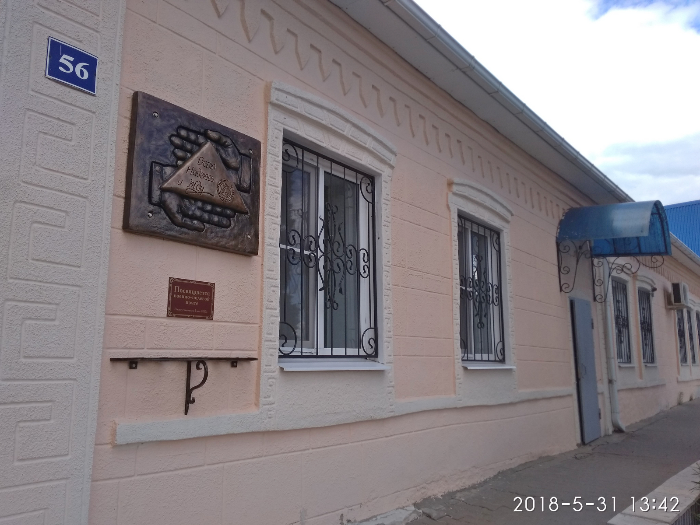
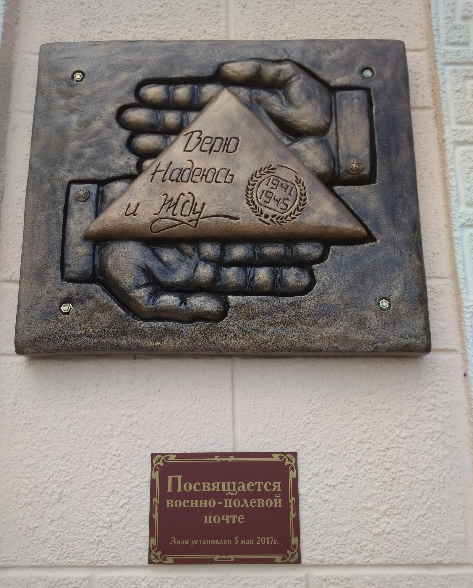

Места нашей области, посвящённые Великой Победе
 Домой
Домой
Памятный знак полевой почте (Тербуны)
Памятный знак военно-полевой почте установлен на здании Тербунского отделения почтовой связи по адресу: ул. Октябрьская, 56.
Торжественное открытие знака состоялось 5 мая 2017 года. На барельефе изображено фронтовое письмо–треугольник в солдатских ладонях. На письме – лаконичная надпись: «Верю, надеюсь и жду». Во время Великой Отечественной войны военно-полевая почта была единственной связующей нитью между фронтом и тылом. Обеспечивая связь между военными частями и связь с населением, почтовики не раз проявляли героизм и самоотверженность. Вести из родного дома давали бойцам силы защищать свою Родину. Родные и близкие фронтовиков, с нетерпением ждали весточки с фронта, ведь каждое письмо означало, что их солдат жив. Поэтому эти маленькие письма–треугольники были своеобразным символом надежды.
Изображения:
 